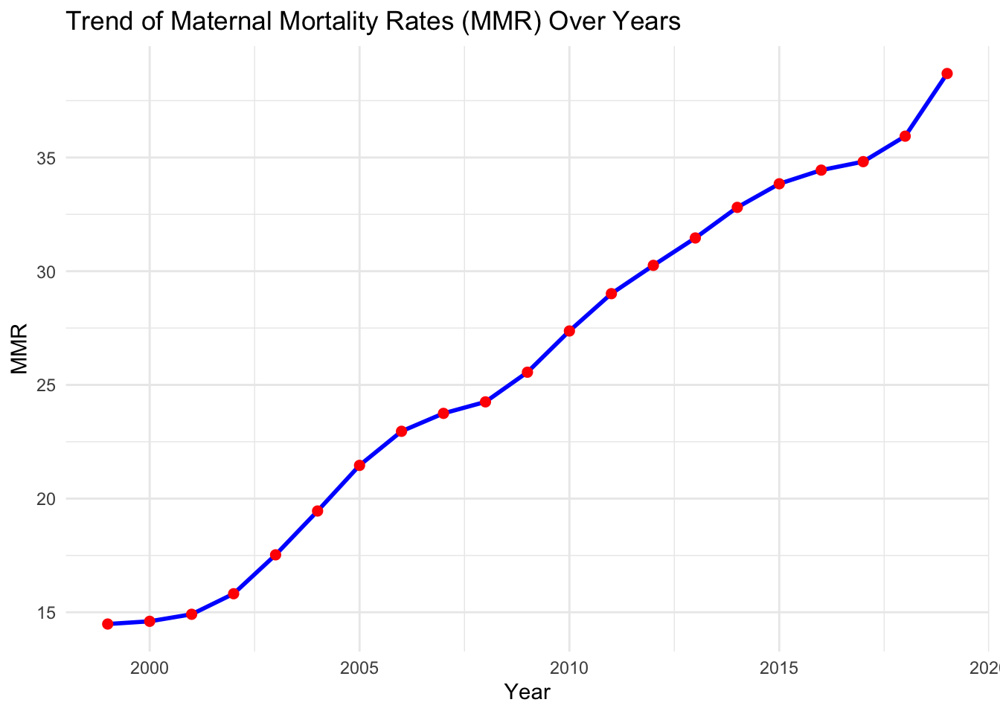
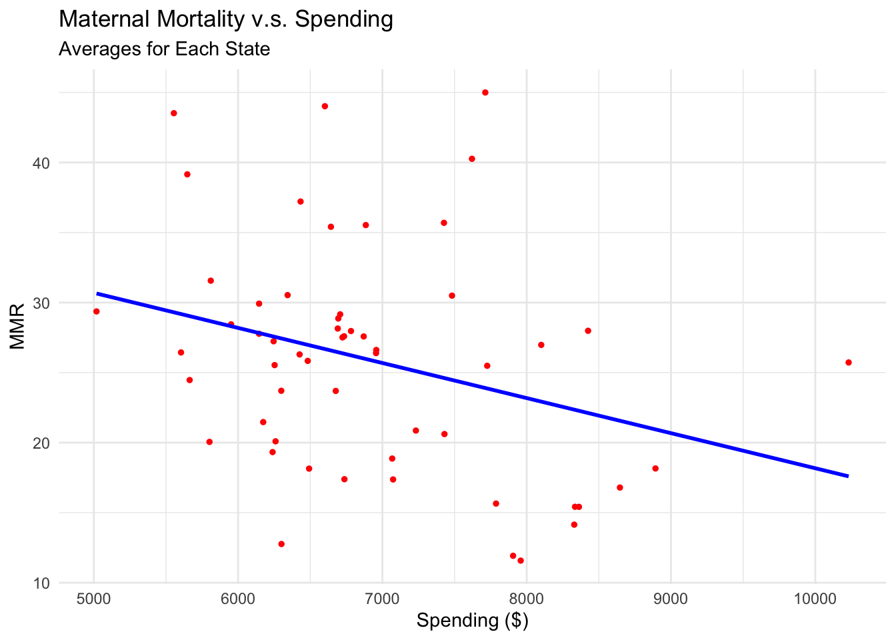

Unraveling the Mystery of Rising Maternal Mortality Rates in the U.S.
Exploring the Maternal Morality Ratio
More people are dying giving birth over last few decades, even with better medical equipment…?
While one may have expected maternal mortality to have decreased in the last two decades due to innovations in and better access to natal care, the opposite is true. The original goal of this team was to investigate how healthcare policy and economic factors contributed to maternal mortality. However, once this increasing death rate trend was uncovered, the team pivoted to looking at other environmental factors such as location, spending, and age to hopefully shed some light on this scary trend.
Why does this investigation into MMR matter?
The maternal mortality rate gives insight into the trends and disparities of public health resources, how healthcare policy is formed and informed, and overall societal welfare in the United States. This research matters not only because it reflects the effectiveness of the healthcare system, but the increasing tendency also highlight the broader socioeconomic causes of outcome disparities behind the scenes.
Interactive Maps
Here is the trend of MMR and Healthcare Spending for each state from 1999 to 2019:
Young Woman - Rich Woman?
In the exploration of the possible environmental factors to cause this increase in mortality, the scholarly articles that examine the same data gave us the idea to take a close look at the healthcare spending and the average age of pregnancy. The data we found for these variables display these trends: 1. People are having babies later and later in life. 2. People are spending more and more on healthcare. We predict that the maternal mortality ratios will be lower in groups with lower age of pregnancy and higher spending on healthcare. So, being a rich and young woman should be the solution to this emerging problem – but is it?
Thesis statement
The increase in the maternal mortality rate is significantly influenced by a combination of environmental factors such as spending on healthcare and the average age of pregnancy.
Thoughts from Findings
Younger Age is Preferred, but …
Existing biology research into best habits and behaviors for pregnancy indicates that there does not seem to be a “golden year of giving birth” However, the statistical results show that the average age of pregnancy is a strong predictor of the MMR trend. This trend supports the idea that the growing average age is contributing to the increasing maternal mortality rate across the country. While MMR is also a result of chronic illness and other disease that leads to fatal situations, it is important to consider that the increasing age leads to these higher risk scenarios and this contributes to mortality overall.
Here are two links to relevant bio-medical research:
Spending needs a second thought…
In the analysis of healthcare spending, the data shows a moderate link between spending and maternal mortality rates.
Each point in the graph below represents the average MMR and average healthcare spending from 1999 to 2019 for each state. The blue fitted line shows a negative trend that increasing healthcare spending will reduce the MMR.

However, there are couple outliers in the graph which reduce the accuracy of the fitted line. There maybe other factors that can affect MMR.
Future Action
Despite the advances in medical technology and healthcare practices, the maternal mortality rate unexpectedly has grown in the recent decades. The sharp increase of MMR in all race groups and regional groups reveal the crucial fact that the resource allocation and socioeconomic factors are drastically influencing the data performance.
By understanding the complex potential causes, the research underscores the need for comprehensive strategies addressing broader determinants of health, economic resources, and healthcare practices to reverse this troubling trend in maternal mortality.